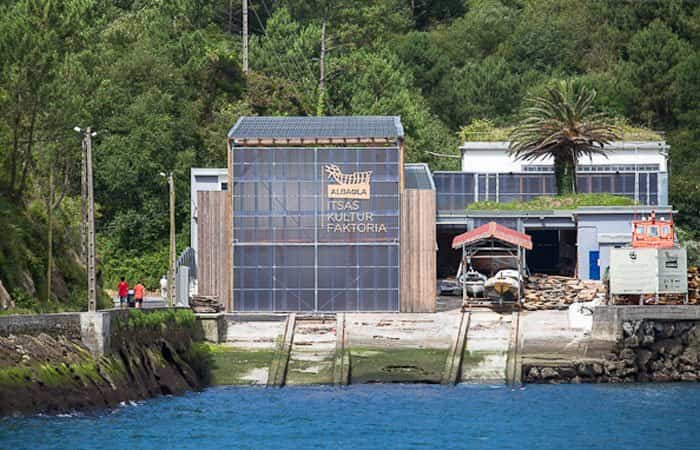
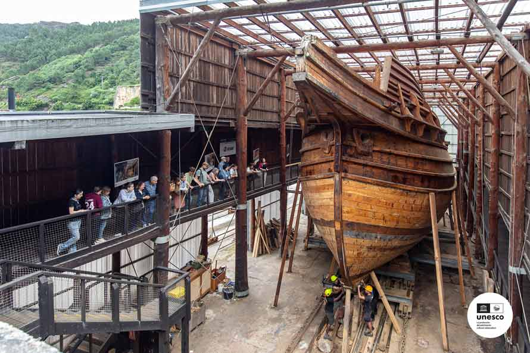

Albaola, factoría marítima Vasca
Recuerdo del glorioso pasado de Pasajes en el ámbito de la construcción naval, en este sitio se reaviva esta tradición, un legado para las generaciones venideras.
Un espacio único donde podrás aprender sobre la historia de la construcción naval, los primeros viajes transoceánicos o la vida a bordo de un barco ballenero.
En las instalaciones podrás encontrar un museo, un taller y un astillero donde ante la atenta mirada del público los carpinteros y artesanos navales construyen la réplica exacta de la Nao San Juan, un ballenero del siglo XVI que se construyó en este mismo puerto en 1563
Con la construcción de embarcaciones históricas como actividad principal, Albaola Itsas Kultur Faktoria, ubicada en Pasai San Pedro (Pasaia, Gipuzkoa), es un espacio innovador donde se recupera y pone en valor la tecnología marítima artesanal. La Faktoría está abierta al público y se caracteriza por su dinamismo, por la diversidad de sus actividades y por su proyección internacional..
Pincha en el siguiente enlace, para conocer más sobre el ballenero que estamos construyendo